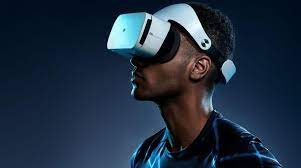
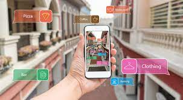
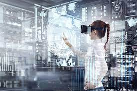

확장현실(XR)이란?
확장현실(XR)은 가상현실, 증강현실, 혼합현실을 포함한 몰입형 기술이다.
XR이란 사용자를 가상 세계로 몰입시키는 VR, 현실세계에 가상요소가 겹치는 AR,
그리고 이둘의 장점을 결합한 MR의 기술을 활용하여 확장된 세상을 창조하는 초실감형 기술입니다.
XR기술은 교육,의료,건축,엔터테인먼트 등 다양한 분야에서 혁신을 가져오고 있으며
이를 통해 사용자는 시공간의 제약 없이 새로운 경험을 할 수 있습니다.
영상보기
부연설명
|  | 가상 현실(VR)은 완전히 상상으로 만든 공간, 즉 이미지 안에 존재하지만 현실에는 존재하지 않는 인공 환경이다. |
|  | 증강 현실(AR)은 홀로그램 기술을 통해 디지털 시각 요소, 소리, 기타 감각 자극을 통해 얻어지는 실제 환경의 향상된 대화형 버전입니다. |
|  | 혼합 현실은 VR과 AR이 혼합된 것입니다. |